展開閱讀目錄 · 14 個相連的問題
上篇 · 11:10–30:07
學習、工作與判斷
先從熟悉的學習經驗開始，看看答案變得容易之後，哪些能力更需要自己練習。
題目有答案，和問題能被解決，是同一件事嗎？
上課、考試、寫作業，我們很熟悉一種學習方式：題目已經有人出好，回答有一定的範圍，最後也有判斷對錯的方法。當然，學校裡的問題不全都只有一個答案；不過，這種熟悉的經驗，可以幫我們對照離開學校後的不確定。
到了真實工作裡，常常沒有這本解答本。可能連問題都還沒定義清楚，手上的條件不完整，也沒有人能先告訴你哪條路一定可行。使用 AI 也是如此：即使它很快給出一份回答，你仍然需要判斷這是不是眼前真正要解決的問題，以及這份回答能不能用。
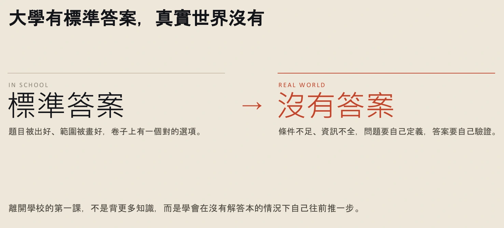
查看完整第 6 頁 ↗
把問題轉回教育。如果把老師的題目拍照交給 AI，就能立刻得到一份答案，那原本的作業究竟希望我們練到什麼？是交出那張答案紙，還是經歷理解、嘗試與判斷的過程？有了 AI 之後，這兩件事更容易分開。
先不用急著判斷「用 AI 好」或「用 AI 不好」。我們可以沿著兩條線思考：一條是職涯——新人怎麼進入沒有標準答案的工作；另一條是教育——當答案容易取得，學習還應該保留什麼。接下來的新手村例子，先從第一條線往前走。
想一份你做過的作業：如果 AI 替你寫完，你拿到了成果，卻可能少練到哪一個步驟？這裡先不用選擇支持或反對使用 AI。
核對這一段的逐字稿 · 11:10–12:41 · 2 個原章節
以下直接取自整理逐字稿，保留原措辭及待核標記；不是人工逐秒校稿。正文的銜接與練習不包含在此。
00:11:10｜今天要理解的三個問題
00:11:10 ↗
所以今天主要會有三個部分。第一個部分是，為什麼我們現在需要學AI。然後今天主要是要跟各位簡單的說明說，什麼是Transformer，文字是怎麼進去的，中間的運算是什麼樣的過程，最後文字是什麼出來的。在這個過程當中，我們需要用什麼樣的基本態度，去面對中間AI運算的過程。
00:11:44｜為什麼現在學 AI：職涯與教育
00:11:44 ↗
為什麼是現在呢？這一系列的課程其實主要是會，我希望碰觸兩個議題。第一個是關於職涯。原因是因為現在其實，我們的教育比較多主要，其實都是教你結構化的答案。就是你有考試你可能有選擇題，你可能有解答題，所以你的回答裡面會有一定的框架。但其實真實世界是沒有答案的，跟運用AI其實也是一樣，就是運用AI其實沒有答案。第二個是如果今天一個Prompt就有答案的時候，未來的教育要往哪一個部分去前進？
00:12:31 ↗
有點像我其實就把老師的問題拍個照，問AI那我馬上就可以寫答案了。所以這個過程是好的還是不好的？
如果新手的任務變少了，新手要在哪裡練習？
想像一條熟悉的職涯路線：畢業拿到入場券，進公司後從小案子做起。你可能還不熟練，但會在跟案、出錯與收尾的過程中，逐漸知道真實工作怎麼運作。這段累積經驗的時間，就像遊戲裡的「新手村」。
這條路有一個前提：公司願意把適合新人的工作交給新人，也願意花時間帶人。如果某些任務能由有經驗的人搭配 AI 完成，公司可能重新比較人力、成本與產出，原本用來練習的工作也就可能減少。
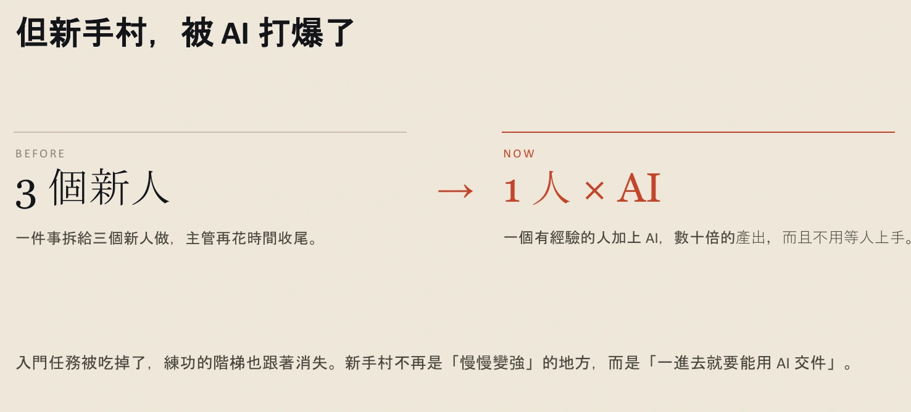
查看完整第 8 頁 ↗
這裡的張力不只在「AI 能不能做我的工作」。更難的問題是：一個人還沒有經驗時，原本靠做小任務累積經驗的路，會不會也跟著改變？因此，除了趕快學會工具，我們還需要思考：可以在哪裡練習，又要怎麼累積判斷所需的經驗？
課中引用的簡立峰觀點，接著把焦點帶到「寬的能力」與學習時間：除了把一件事做深，我們也可能需要把不同領域的知識連起來，再用 AI 協助實作。這提供了一種思考方向，讓我們重新看待深入專業與跨領域組合的關係。
這系列課的目標因此放在「從零到一」。先建立可繼續走的起點，之後有人往音樂、有人往影像，依自己的興趣發展。這並不能推出「專業深度不再重要」；稍後談到驗證時，我們還會回到領域知識的價值。
當學習時間受到壓力，答案又能快速取得，教育要做的就只是把同一套訓練加速嗎？這把我們帶回一開始的第二個問題。
核對這一段的逐字稿 · 12:41–16:17 · 2 個原章節
以下直接取自整理逐字稿，保留原措辭及待核標記；不是人工逐秒校稿。正文的銜接與練習不包含在此。
00:12:41｜新手村與公司的用人方式
00:12:41 ↗
在過去的職涯裡面，我們會先有一個入堂券。你畢業之後你可能會，經過一個新手村的階段，你可能會是一個junior，你需要跟幾個小案子，知道說真實世界是怎麼運作的。那你二到五年後，你可能就會轉成是一個senior的身份。但是對於現在而言，就是這個模式已經完全被AI打爆了。原因是因為現在很多的公司，他們在討論的是，如果我有一件事要給三個新人去做，那我倒不如就一個人加上非常多個AI，那我可能有數十倍的產出。
00:13:35 ↗
那我不見得需要，或我不見得非常肯花時間去帶新人。所以這個是目前有一些公司的現況，就是有些公司的人就是極度的銳減。原因是AI可以取代掉幾乎百分之六七十的工作。 所以基本上AI的訂閱一直不斷往上。我AI的訂閱最貴，一個帳號可能才六千多塊。但如果我要找一個新的人的時候，我就可能需要花到四萬五萬，或者是以上。所以很多人寧可就是，我多花一點AI訂閱費，反正我訂最高也才六千多。
00:14:24 ↗
那一個不夠訂兩個，兩個不夠訂三個。所以這個是一個蠻現實的問題。
00:14:34｜寬與深的能力，以及從零到一
00:14:34 ↗
在2026年就是今年的時候，就是簡立峰老師在一個全國大學校長會議的時候，他有討論到一個問題。過去的教育我們主要是著重於深的能力，就是在一個領域裡面我們要深耕。那你可能會經過大學部碩士，再來到博士班你可能就有非常深的專業能力。但是簡立峰老師認為說，再來可能寬的能力會逐漸大於深的能力，就是你需要去了解很多不同面向的知識，再把這些知識給組合起來，或者是再把這些知識利用AI去做賦能。
00:15:20 ↗
所以他同時也提到，就是新手村大概只剩兩個月。那原因是因為如果，想一個議題如果六月畢業的話，他說兩個月大概就是七月和八月。所以門檻從來就不是會不會，而是變得你多快要學會這個東西。就等於是你一畢業大家就希望你有AI的技能，你可以運用AI來做很多不一樣的工作。 所以這一系列課我希望給大家的是，協助大家從零到一的過程。那一到後面就是看個人，因為你有可能對音樂非常有興趣，你有可能對影像非常有興趣，所以不同的人會對不同的面向可能感興趣。
00:16:12 ↗
那你就可以去開發你後續的未來的規劃。
如果 AI 能代答，課程該重新設計哪一部分？
對於大學教育，有縮短年限、既有教育可能跟不上變化等不同主張。這些課中引述的看法不見得百分之百正確，但它們讓我們看見教育正在被追問：既有的安排，還能不能帶來原本期待的學習？這個問題值得討論，卻不能直接推成「不用上大學」的結論。
接著看課中引用的 MIT 教育建議。不必先背下八個項目，可以先抓出一個方向：先問這堂課要帶給學習者什麼核心價值，再回頭設計學習過程。這和前面「題目拍照就能得到答案」相連——產出容易了，更需要重新確認原本想培養的能力。
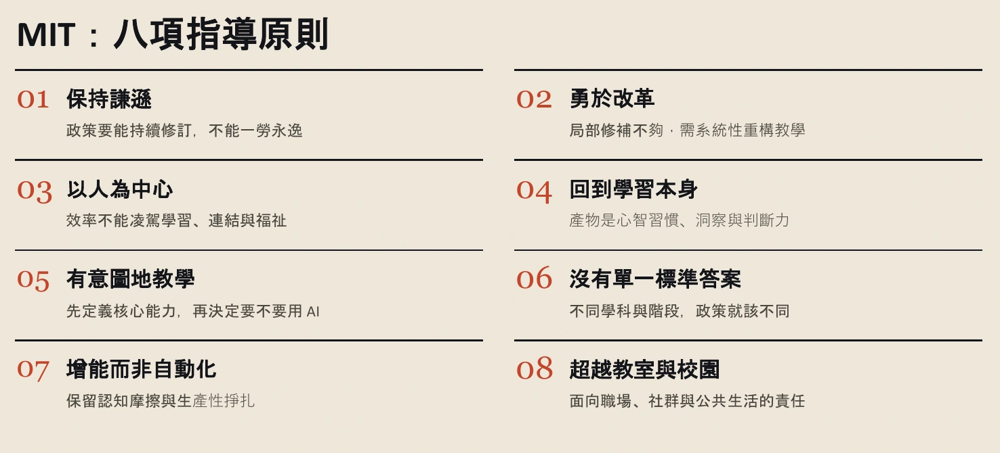
查看完整第 12 頁 ↗
其中一個值得停下來想的概念是「認知摩擦與生產性的掙扎」。把它放回剛才的作業情境，意思就比較具體了：有些卡住、比較與自己想辦法的過程，可能正是學習發生的地方。如果 AI 把這些過程連同答案一起代做，我們省下時間，也可能少了一次練習。
這不表示所有困難都應該保留。整理者延伸可以接著問：這一步困難，是在訓練本堂課要練的能力，還是只增加操作負擔？例如，若目標是判斷一段論證，便需要有機會親自辨認證據如何支持主張。這是幫助理解「先定目標，再安排 AI 的角色」的延伸例子，並非影片中的實驗。
把視野從一份作業擴大到整個學習環境，還可以從三個面向思考：調整教育流程、以人與社群為中心、持續反思與修正。這些課中彙整的建議提供了方向，實際怎麼安排，仍要回到不同領域的學習目標與情境。
回到那份可能由 AI 代寫的作業：如果你是設計課程的人，會先保留哪個學習動作？先說明想培養的能力，再思考 AI 可以幫哪一段。
到這裡，問題已從「會不會用一個工具」，擴大到學習與工作的安排。那整個 AI 的發展，又走到哪個階段了？
核對這一段的逐字稿 · 16:17–19:13 · 2 個原章節
以下直接取自整理逐字稿，保留原措辭及待核標記；不是人工逐秒校稿。正文的銜接與練習不包含在此。
00:16:17｜科技圈對教育的看法
00:16:17 ↗
那當然不是只有簡立峰老師這麼說，就是包括OpenAI也就是GPT的老闆Sam Altman，那他其實也在說，大學可能兩年就夠了。我有把來源放在這，他說兩年大概就是叫你去交朋友而已。那Elon Musk就是馬斯克他在說，目前的教育可能是培養一批，就是會被AI淘汰的人。那原因是因為現在很多還是存在於記憶解體，還有標準答案上。那當然各行各業有各行各業的說法，那這個不見得是百分之百正確的。
00:17:03 ↗
那下面這個有一個YouTube的連結，那這個是一位17歲的少年 那他被接受採訪，那他今年的時候去參加一場AI頂尖的會議，那會場與會者就充滿了各式各樣，跟他苦口婆心的說，其實你真的不用上大學的議題。
00:17:26｜教育原則：重新思考學習設計
00:17:26 ↗
所以在8月的時候，MIT就針對了大學的這個部分，那他們提出了幾項的指導原則。那他們認為大學這端，在面對AI的時候，我們要怎麼樣去做修正？大家可以看起來就是，並沒有非常一致的一致和明確的這個規劃。那其實主要核心就是來自於說，或許我們需要去逆向的去思考說，這堂課要帶給大家的是什麼樣的核心價值，然後再回過頭來去設計整個學習的過程應該要怎麼走。
00:18:11 ↗
那以及沒有標準答案，那還有保留認知摩擦與生產性的掙扎。那這個其實蠻，在AI使用我覺得是蠻重要的一個部分，那這個晚一點呢，就會跟各位進行說明。 那他們接著也有提出三大改革的領域，就是要怎麼樣去調整整個教育的流程，那怎麼樣重新規劃人和社群當作中心，然後以及持續的反思和迭代，那就是一直不斷的保持動態的修正。對，但這個就是他們提出的一個report，那上面的內容就是沒有要去抨擊某一個領域，那只是把目前收集到的現況跟各位做一個分享。
看見工具一直更新，就等於看見未來了嗎？
可以先借網路時代作比較：先有網路與伺服器等基礎，資訊變多之後出現入口與搜尋服務，新的裝置又讓更多應用進入日常生活。這個比較不是要精確重述每一步歷史，而是提供一個觀察角度——基礎能力出現，和大家能方便使用，中間還有一段距離。
對照 AI，下圖把算力、模型、可能的共通操作入口、新載體與應用普及排在一起。圖上的問號很重要：普及性的操作系統會長什麼樣子，仍是開放的問題；幾個階段也可能同時推進，而不是整齊地一格走完才走下一格。
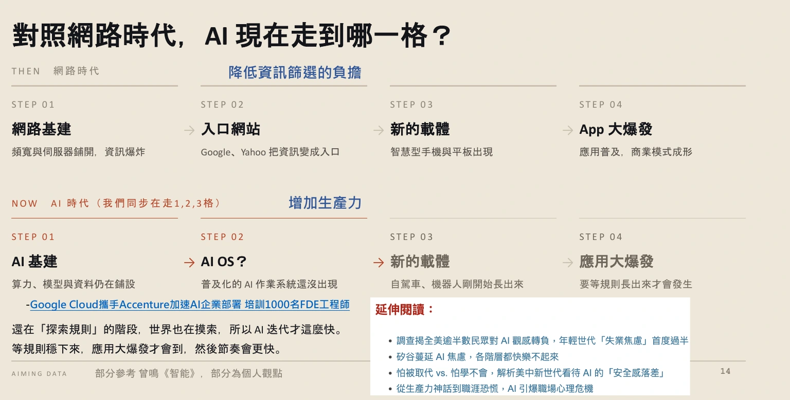
查看完整第 14 頁 ↗
用「出門吃飯」作例子，這個差距就具體了。你可能自己訂位、記時間、開車找停車場，再查步行路線；可以想像另一種情境：由虛擬分身訂位，接到行事曆，再把停車與步行導航接起來。
例子的重點不只是哪個步驟能自動化，而是原本分散的事情能不能連成一段完整的使用經驗。這是一種整合想像，不代表目前所有服務都已具備這些能力。
面對這些變化，我們可能感到焦慮。如果把當時的發展理解為探索與整合，之後的普及便可能帶來更大的改變。但這仍是一種展望。對學習而言，可以先把注意力放在理解與判斷，讓自己能面對變化，不必把學到的東西全綁在某個當下的工具介面上。
當生成與串接變得更容易，增加的不只是便利。接下來還有另一個問題：我們將如何面對更多、更難辨認來源的資訊？
核對這一段的逐字稿 · 19:13–24:03 · 3 個原章節
以下直接取自整理逐字稿，保留原措辭及待核標記；不是人工逐秒校稿。正文的銜接與練習不包含在此。
00:19:13｜從網路時代類比 AI 的發展
00:19:13 ↗
如果我們回去對照過去的網路時代的時候，現在的AI到底是走到哪一個格點上面？過去的網路時代，我們的第一個階段是網路的基礎建設，那你可能有鋪設網路線，那還有伺服器。所以基礎建設完善之後，就會開始產生資訊的大爆炸。資訊的大爆炸，就衍生出了Google和Yahoo的這些公司，就他們做的就是降低資訊的採選，因為他們其實只是把很多的不同的網路以及資訊去做排序。那接下來則是一個新的載體的出現，像智慧型手機、IG平板的出現，那最後APP的大爆發。
00:20:04 ↗
那這個路徑是參考，就是部分參考〔書名／作者待核：甄明的智能〕的這一本書，那有一部分是我自己的觀點。 如果對照AI的時代，其實我們現在大概還處於非常的初期，就是AI的基礎建設，因為包括算力、模型不斷的更新，還有資料庫正在不斷的建置。那到了第二個階段，可能會有一個普及性的作業系統，那這個沒有人知道這是什麼東西。所以現在的技術的跌斷才會非常非常的迅速，原因是因為所有人都在try and error，就是我根本就不曉得說，除了coding的這個領域以外，其他的領域是怎麼樣去做事情的。
00:20:59 ↗
所以像Google他們也就是吸收了某一間公司，然後部署了1000名的工程師，想要進到現場。所以當這些大公司們逐漸的去了解真實社會不同公司運作的面向之後，那或許就會統一出一個操作性的系統。那這個操作性的系統或許也會有一個新的載體，那最後才是應用的大爆發，因為統一之後就代表說，所有人都可以很輕易的很簡單的觸碰到AI，而不是現在我們還需要大量的去串接很多很多不同的模組，然後把它組合起來來去做運作。
00:21:46 ↗
但在這個過程當中，雖然我們同時在走一二三個，那我們其實還在非常非常初期的階段。
00:21:54｜焦慮與尚未普及的應用
00:21:54 ↗
可是如果去看一下，好像每個時代都非常的焦慮，就我隨便截取了一個新聞的訊息，就是年輕世代也感到焦慮，然後每個階層好像都感到焦慮，然後中生代也感到焦慮，所以其實好像沒有人不焦慮的。但是如果你回到這個方向看的時候，你就會發現說，現在焦慮好像還太早了，因為等後面的都完成之後，我們可能才要感到焦慮，因為瞬間的應用會整個鋪天蓋地而來。這個可能是一個非常簡單的，
00:22:37｜未來訂餐與出行的串接想像
00:22:37 ↗
所以如果在，如果針對過去跟未來的幻想，假設我們以去吃飯當做一個例子好了，我們現在的每一個模組都是獨立運作的。第一個可能你要打電話去餐廳訂位，對方幫你訂好位之後，你當天開著你的車出門，你可能要先去找車位。但如果對應到未來AI時代，可能就會變成是說，你只要派你的虛擬分身去訂位就好，訂好位自動幫你加進你的〔疑似行事曆；原辨識：行屍〕裡面。
00:23:24 ↗
你的車開出去的時候，快到餐廳的時候，你的、可能你的車或手機就直接挑出來說，你應該要去停哪一個停車場或哪一個停車格。這是最友善的。你停好車之後，你的手機就會自動跳出，你怎麼樣走到這一間餐廳。 這個其實目前而言基本上都是做得到的，但是這個系統其實還沒有到這麼的普及，就是每個模組你其實都是需要去自動串接的。
如果內容生成很便宜，什麼反而變得費力？
把視線從「AI 可以幫我做什麼」，移到整個資訊環境，便會遇到另一個問題。當人與機器共同大量產生內容，生成的速度更快、複製與改寫更容易，但讀者不一定更清楚內容是從哪裡來的。
一篇文章可能由人寫、由 AI 產生，或經過人與 AI 多次整理。內容看得見，形成它的過程卻可能看不見。所以，取得更多資訊不會自動消除不確定；我們還是得花力氣核對來源、理解前提，以及判斷說法是否站得住腳。
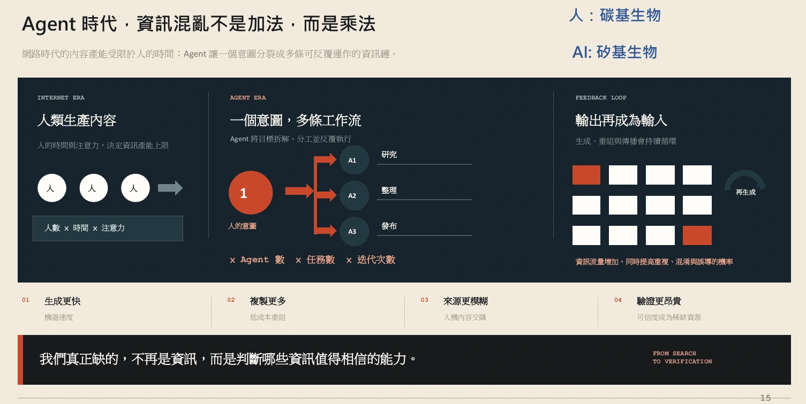
查看完整第 15 頁 ↗
我們需要的能力因此不只是「取得資訊」，還有「判斷哪些資訊值得相信」。這裡又回到了前面暫時放下的專業深度：沒有一定的領域知識，我們可能連該問什麼、哪裡不合理，都不容易看出來。跨領域組合和領域判斷，是在不同地方派上用場。
這也接回開頭的教育問題。若學習只剩把一個看起來完整的答案交出去，我們就可能略過判斷它的練習。因此，課程需要談原理、提問與查證，而不只是示範哪個按鈕可以產生更多文字。
但要建立判斷力，又得理解很多互相牽連的知識。既然不可能一次學完，第一步應該怎麼走？
核對這一段的逐字稿 · 24:03–25:50 · 1 個原章節
以下直接取自整理逐字稿，保留原措辭及待核標記；不是人工逐秒校稿。正文的銜接與練習不包含在此。
00:24:03｜資訊增加，驗證反而更重要
00:24:03 ↗
在AI的時代，也有人說人其實是一個碳基生物，就是我們是探索組成的。AI是一個矽基的生物。所以在這個時代，其實是碳基生物跟矽基生物的大混戰。原因是因為矽基生物，他們可以產生非常多巨量的資訊，而且他們生成的速度可以到非常快。他們現在網路瀏覽的量已經遠遠超過人類過去十年來所累積的量。 所以未來在網路時代之下，會有非常多的海量資訊需要去做篩選。
00:24:53 ↗
所以機器讓生成的速度更快、成本更低，但是來源其實是更模糊的，因為你根本就不知道這個是人寫的、還是AI寫的、還是人家AI去寫的。所以未來的驗證會變得很昂貴，原因是因為你需要更好的去判斷每一個東西、每一個準則以及每一個架構。 所以我們缺的已經不再是資訊，因為其實資訊非常好去取得，去判斷哪一些資訊值得相信的能力。所以其實回過頭來，還是會回到人的主要領域的知識。
00:25:41 ↗
這個是hard skill，當然也會有一些sub skill的部分。
知識是一張網，我們為什麼只能先走一條線？
可以把 AI 知識想成一張網。你可能從語言模型開始，接著碰到如何呼叫模型、如何使用工具，再發現這些又牽連到其他概念。每一個新名詞都不是孤立的，但人在學習時，總得一件接一件地讀、一段接一段地理解。
所以，知識之間的關係像網，實際學習卻沿著時間走成一條線。這個比喻讓「我怎麼還有這麼多不懂」有了另一種解釋：你正走在局部路徑上，還沒把它和整張網連起來，不等於這條路毫無進展。
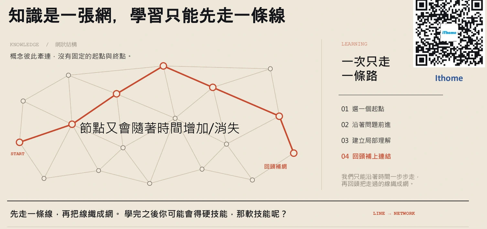
查看完整第 16 頁 ↗
困難還不只如此，這張網本身也在變：新工具與新名詞出現，有些舊做法則可能被整合或取代。影片中提到先前整理的教材就遇到了這個問題。只記住一套當時的操作方式，之後仍可能需要重新理解。
因此，「先走一條線」不是把知識永遠切碎。它容許我們先建立局部理解，再回來補關係。這堂課接下來選擇從「文字怎麼進入模型，又怎麼出來」開始，就是一條具體路徑：先把生成流程走通，之後再談提示、上下文與使用方法，就多了一個可以接上的位置。
最近讓你卡住的一個 AI 名詞是什麼？它和你已經懂的哪件事有關？先找出一條連線，不必立刻把整張網補完。
工具會變、路徑要補，那麼在反覆學習的過程裡，有哪些能力值得持續練習？
核對這一段的逐字稿 · 25:50–27:53 · 1 個原章節
以下直接取自整理逐字稿，保留原措辭及待核標記；不是人工逐秒校稿。正文的銜接與練習不包含在此。
00:25:50｜知識是一張網，學習先走一條線
00:25:50 ↗
AI會非常難學的原因是因為，如果我們把整個學習AI打開，它其實有點像一張網一樣。每一個網的每一個節點，可能就代表了每一個不同的概念。有可能你的開始是從理解LLM模型開始，你的下一個可能是從我如何去呼叫這個模型來去做事，可能再對應到你可能學的是一個skill。但是我們每一次在學習的時候，因為我們的時間軸是時間，所以我們只能夠隨著時間去做線狀的學習。 但整個知識是面狀的。在AI的時代，這個面狀的每一個節點，又會不定時的增加跟消失。
00:26:42 ↗
就有可能你過去一個月所學的內容，有一些東西已經不見了。所以這個節點的變動是非常非常的快的，所以這會增加了整個在學習AI的難度。原因是因為你需要在相對比較短的時間之內，你必須要去理解整張網在討論什麼。你就會去知道說，為什麼有一個新的東西、新的名詞產生？為什麼會有舊的名詞消失了？原因是因為新的東西，它可能會去覆蓋掉舊的。 所以這個是我之前8月的時候，所以各位有興趣的可以去看一下。這邊主要是把基礎的核心都寫在裡面，但是有一些東西已經不見了。
00:27:34 ↗
就是8月你知道嗎？然後現在才9月，就是隔一個月，就是有一些概念已經沒了。所以這迭代的速度已經變得很快，就是已經比過去幾個時代都還要快得多。
四種能力，怎麼從名詞變成練習？
值得持續練習的能力很多，但每個人的時間有限，不可能一次顧到全部。這系列課先挑四個方向——批判性思考、元認知、成長心態與好奇心，以及一點堅韌。它們是一組練習的起點，不是一份人人都必須照排的能力排名。
如果只抄下這四個名稱，容易又回到背答案。你可能也有這種經驗：看過文字、看過圖，仍然難以想像實際怎麼做，親眼看一次操作才接得起來。我們可以從具體的觀察出發，先看 AI 如何回答，以及為什麼要做某種設定。
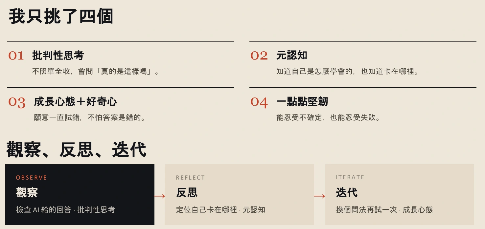
查看完整第 18 頁 ↗
看到了之後，再問有沒有可能做得更好，或是哪個地方還不懂，這就是反思。接著換一種問法、設定或做法，再試一次，才走到迭代。這三步的價值，在於承認自己和 AI 都可能出錯，讓下一次嘗試有依據，而不是期待一次就得到完美答案。
現在可以回頭看開場的兩個問題。當工作沒有解答本，我們需要能觀察、判斷並調整；當作業的答案容易取得，我們則需要保留培養這些能力的過程。這也是為什麼課程先談職涯與教育，再開始拆解模型原理。
挑一個你最近交給 AI 的問題：先寫下你觀察到什麼，再指出哪裡還不確定，最後想一個能查明它的下一步。能說出這段過程，比只列出四個能力名稱更接近這一段的學習目標。
核對這一段的逐字稿 · 27:53–30:07 · 2 個原章節
以下直接取自整理逐字稿，保留原措辭及待核標記；不是人工逐秒校稿。正文的銜接與練習不包含在此。
00:27:53｜長久受用的技能
00:27:53 ↗
所以把AI的應技能學完之後，未來的軟技能要怎麼辦？就是軟技能就會討論到，就是有個叫做Durable Skill的圓圈圖。這個圓圈圖就是討論到就是有個叫Durable Skill的圓圈圖。這個圓圈圖會集了大概100個未來可能會碰觸到的技能，包括溝通、協助、品格、正念之類的。但這100個其實非常的難，每個人的時間都有限，所以我們頂多只能夠碰觸到幾個軟技能而已。
00:28:39 ↗
所以在接下來的時間裡面，只會挑4個，就是批判性思考、元認知，然後以及好奇心還有一些堅韌。就在後面的內容當中，會帶大家去做觀察。
00:28:59｜觀察、反思、迭代
00:28:59 ↗
就是回到最底層的東西，去看說AI是怎麼回復的，為什麼我們要這樣去做設定。原因是因為從0到1的過程當中，其實非常的難。因為你即使去看任何的文字、看任何的圖片，有時候你沒有親眼看到怎麼操作，其實你會沒有辦法去想像。這是我自己的經歷，所以我會盡量拍每個東西讓大家去看。接下來有些東西我們會反思，就是有沒有機會能夠做得更好，或有沒有機會能夠去優化它。最後再進入到迭代。
00:29:45 ↗
所以這個也是執行AI很重要的一個過程，因為我們不是永遠都是對的，我們一定有非常巨大的錯誤，但有一些錯誤就是能不犯就不犯。所以我會盡量的回到這三個點，就是從觀察開始、反思，最後再到迭代。
下篇 · 40:38–01:03:20
一句話，怎麼變成模型的下一句話？
先看文字怎麼被拆開，再問數字怎麼帶出意思，最後理解一段流暢回答的來處。
知道「文字接龍」，還少了哪一段？
前面談過為什麼要學 AI，以及資訊愈容易取得，為什麼判斷仍然重要。接下來，把問題往下挖一層：如果不知道回答怎麼產生，我們就很難判斷該相信它到什麼程度。
「文字接龍」是一個好入口，但它還沒有解釋文字怎麼進入模型、模型中間做了什麼，以及下一段文字怎麼被選出來。「預測下一個 Token」也一樣；如果 Token 還是個陌生名詞，這句話只是把問題換了一種說法。
我們可以先把整個過程拆成三個問題。這一段不用從矩陣公式開始，先讓這三件事接得起來。下文用 Transformer 說明自回歸文字生成，也就是把新產生的內容接回前文、繼續往下產生文字的方式。
- 先問輸入文字怎麼變成可計算的資料？
- 再問中間模型怎麼利用順序與前文？
- 最後問輸出下一個單位怎麼被選出來？
要走進第一步，我們先把熟悉的一句中文交給模型。
核對這一段的逐字稿 · 40:38–42:11 · 3 個原章節
以下直接取自整理逐字稿，保留原措辭及待核標記；不是人工逐秒校稿。正文的銜接與練習不包含在此。
00:40:38｜文字接龍與 AI 幻覺
00:40:38 ↗
所以如果你去Google，文字怎麼進到模型裡面呢？你通常會去Google說，它其實就是一個文字接龍。那這個東西就是在預測下一個token，就是下一個字是怎麼樣被預測的。那為什麼沒有理解這個？因為一旦你理解文字怎麼進入到模型，那它又是怎麼被輸出的，你其實就很清楚可以理解，為什麼有時候AI會產生幻覺，AI為什麼會胡說八道。對，那這個呢，就是如果理解整個流程，你就會知道這個原因是從哪邊來的。
00:41:18｜Transformer 與 2017 年論文
00:41:18 ↗
所以模型的架構呢，主要是來自Transformer的這個結構訓練出來的。關於Transformer呢，各位有興趣可以去看2017年的文章，這個叫Attention Is All You Need，非常非常經典的就是LLM的文章。對，但通常就是打開你你你不太會想看啦。對，因為有時候對非專業領域的人會很複雜。所以如果你有興趣，你可以把文章拉進GPT，然後讓它輔助你去做學習。
00:41:52｜把流程拆成輸入、中間、輸出
00:41:52 ↗
在這個步驟呢，我自己會抓三件事。第一個呢，我會先理解文字怎麼進去，然後中間發生了什麼事，那文字怎麼出來。所以把整個流程呢，拆成三個不同的Block。
「開始」是兩個字，一定是兩個 Token 嗎？
以「我想開始學習人工智慧」為例。人讀到這句話，通常直接理解意思；模型的輸入處理則要先決定：這一串文字，要切成哪些單位？負責切分與編碼的工具叫 Tokenizer（文字切分與編碼工具）；切出來的單位叫 Token。
請先看下面原投影片中的方格。這個示意把「我」和「想」各放一格，卻把「開始」兩個字放在同一格。因此，句子開頭的四個中文字，在這個例子裡只有三個 Token。數中文字，和數 Token，回答的是不同問題。
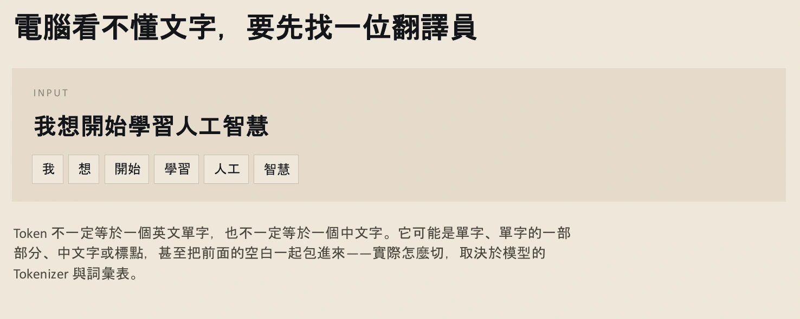
查看完整第 24 頁 ↗
那為什麼不乾脆全部一字一格？投影片接著用樂高零件比喻：切分可以保留常見片段，也可以把一個單字拆成較小的片段，例如課中的 transform + er 示意。要保留多大的片段，取決於實際使用的 tokenizer 與詞彙表，不能只靠我們對字詞的直覺決定。
試著換一個模型，切法與編號可能跟著變；加上空格、標點或換行，也可能改變切分。這些符號不是可以忽略的裝飾。但也別反過來記成「每個空格永遠恰好占一個 Token」：它可能單獨出現，也可能與鄰近文字合在一起。回看影片中的工具示範，可以觀察這些差異。
停一下 · 整理者練習把同一句話交給另一個 tokenizer，Token 數一定相同嗎？
不一定。文字相同，不代表切分規則與詞彙表相同。這也表示，不能只用中文字數直接推算所有模型的 Token 數。
文字已經切成一格一格了。接著要問：每一格的編號，究竟代表什麼？
核對這一段的逐字稿 · 42:11–46:43 · 4 個原章節
以下直接取自整理逐字稿，保留原措辭及待核標記；不是人工逐秒校稿。正文的銜接與練習不包含在此。
00:42:11｜Token 與文字切分
00:42:11 ↗
文字怎麼進去呢？如果你的input呢，是「我想開始學習人工智慧」，記得就是電腦呢，它其實是看不懂任何文字的。所以它會先去找一位翻譯員，那這個翻譯員呢，的功能就是把所有的文字轉成是數字。但對整個文本來說呢，就是它不見得要每一個字都對應到一個數字。像假設以例子上來看，「我想開始」，像「開始」呢，這個在中文字裡面的很容易被綁在一起，所以「開始」呢，可能就是他們的最小單位。
00:42:58 ↗
那在AI領域裡面呢，最小單位呢，我們會叫它token，就是每一個字元。所以這邊雖然就是「我想開始」，那會被切成「我想」跟「開始」，所以原本是四個字，但是被翻譯員翻譯過後呢，你只剩三個token。第一個token叫我，第二個token叫想，那第三個呢，叫做開始。 但不同的語言模型呢，他們會有不同的切法。那這個完全是取決於說，就是模型公司呢，他們怎麼樣實際去操作整個他們字元切分的這個過程。
00:43:44｜Tokenizer 工具與不同模型
00:43:44 ↗
就像transformer這個字，可能會被切成叫transform，然後跟er。那這個的原因是因為有一些字彙表呢，會一直不斷的急速被膨脹。像er這個東西不要被常用的，它可能就會被單獨出來。 所以如果我們來看一下，就是這邊的tokenize的這個APP，這個呢就是一個做token切分的。那右邊呢你可以把它換不同的模型，像這個是lama的70b的模型，那你就可以隨便的去打字。
00:44:46 ↗
所以這邊呢就是不同的token，像這個呢ran是一個token，那逗點呢也是一個token。這邊呢空格加run是一個token，這邊一樣逗點。所以你看它對應到的編碼呢，這個編碼是6713，這個編碼是沒有任何意義的。就這個編碼在製作過程當中呢，只是方便模型去做計算而已，所以記得它沒有任何意義。所以這邊的11就是逗點。
00:45:22｜長單字也可能切成多段
00:45:22 ↗
對，所以如果你去看切分的時候，在lama70b的這個模型呢，而它並沒有把img給切出來。 所以如果找一個比較容易被切分的好了，最長的單字好像叫，〔長單字辨識不清：我311非幣〕，這個有45個字母。所以我們把它放進去的時候，你就可以看到它一個字被切成好幾個不同的區段。對，所以這個就是token的切分。
00:46:00｜空格、標點與換行也是輸入
00:46:00 ↗
那如果我們在這邊呢，給它按個空格，給它換行，所以你可以看到右下角的這個數字哦，就是斜線n呢是換行。我們現在來折，所以逗點空格換行，就是代表一個token。所以任何我們人不見得看得到的字符，它都有可能代表一個token。所以一樣我如果這邊逗點，逗點空格換行720，跟這個720，它們其實是都一樣的。
知道置物櫃號碼，等於知道裡面放了什麼嗎？
切換 tokenizer 時，不只切法會變，編號也可能完全不同。可以用置物櫃來想：Token ID（單位編號）就像置物櫃的號碼。號碼告訴你去哪一格，並不是對櫃子內容的評分。
看下面的 2000 與 8000。8000 比 2000 大，不表示它的意思更強、知識更多，或「聰明四倍」。兩個號碼只是指向不同項目。若把編號的數值大小誤當成語意大小，後面理解模型運算時就會走偏。
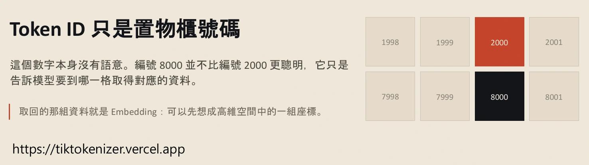
查看完整第 26 頁 ↗
依照 ID 找到的那組數值，叫 Embedding（向量表示）。可以先把它想成高維空間的一組座標：我們熟悉的 XYZ 是三個座標值，模型用的向量則可以有更多維度。這裡先不用想像出完整空間，只要理解它是一整組供後續運算使用的數值。
因此，這一步其實有兩次轉換：先把文字單位對應到編號，再由編號取得向量。置物櫃的比喻只幫助理解「查找」，不表示櫃子裡藏著一篇寫好的回答；Embedding 也不是人手填寫的字典解釋。
文字 → 切成 Token → 查到 Token ID → 取得 Embedding
停一下 · 整理者練習如果兩個編號只差 1，它們的意思就一定很接近嗎？
不能這樣判斷。ID 是查找用的編號，不是語意距離。要把「號碼」與「對應的向量表示」分開。
現在，每個文字單位都有了可運算的表示。但只知道有哪些字，還不夠知道這句話在說什麼。
核對這一段的逐字稿 · 46:43–49:00 · 2 個原章節
以下直接取自整理逐字稿，保留原措辭及待核標記；不是人工逐秒校稿。正文的銜接與練習不包含在此。
00:46:43｜不同 tokenizer 使用不同編碼
00:46:43 ↗
但是你如果把整個模型換成像Google的好了，對，你就會看到說，它的編碼完全都不一樣。對，所以這個編碼呢，其實真的每一間公司每個模型，它們用的號碼是不一樣的。所以你可以把它想像成，它其實就是一個置物櫃的概念，每個token每個字元，有它專屬的置物櫃存在。對，所以如果你可以自己回去自由的去做切換，你可以看一下主流模型，它們是怎麼樣去區分這些token的。對，所以這個是token的部分。
00:47:40｜Token ID、置物櫃與 Embedding
00:47:40 ↗
對，所以token的ID只是一個置物櫃的號碼，它真的沒有任何意義。而且其實一般的使用者，也不太會接觸到token ID的東西。但是我只是希望各位可以知道說，模型本身它讀的其實是數字檔案，它讀的其實不是文字，它讀的是數字。所以整個流程呢，其實是文字人看得懂，但是轉換成token之後呢，文字就會被拆成是一個字，或是兩個字 或是三個字綁在一起，那會去找到它們所對應的置物櫃的號碼，再把它轉成是高維空間的一組座標。
00:48:30 ↗
那高維空間也像是說，基本上理解假設我們以前學過的XYZ，它其實就是一個三個維度的空間。但在語言模型裡面的高維空間，可能是500多維或是1000多維，那這個完全取決於模型公司，它們是怎麼樣再去做計算的。所以你有一個編碼之後呢，你把它轉成是一個高維度空間的一組座標。
「狗咬人」和「人咬狗」，差別藏在哪裡？
看一個容易記住的例子：狗、咬、人這三個字，不管怎麼排列，字的集合都相同。可是排列成「狗咬人」或「人咬狗」，做出動作的對象就換了。如果只告訴模型有哪些單位，卻不讓它取得順序資訊，就漏掉了句意的重要部分。
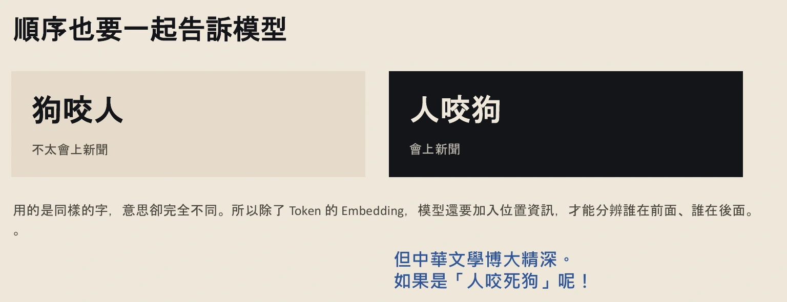
查看完整第 28 頁 ↗
整理者互動 · 只交換字序，不執行模型
現在是狗做出「咬」的動作。
所以，模型除了取得 Token 的向量，也需要位置資訊。這解決的是「誰在前面、誰在後面」。再把例子往前推：如果只有「人咬死狗」，是咬一隻已死的狗，還是把狗咬死？順序沒有變，讀者仍然可能有不同理解。
這個轉折很重要。位置解決了排列的問題，前後文則幫助我們判斷應該怎麼解讀。試著先補一段情境，再接這句話，意思就可能明確許多。接下來要看的，就是模型如何把前文的資訊帶進目前位置的表示。
核對這一段的逐字稿 · 49:00–50:50 · 1 個原章節
以下直接取自整理逐字稿，保留原措辭及待核標記；不是人工逐秒校稿。正文的銜接與練習不包含在此。
00:49:00｜位置、詞序與語意
00:49:00 ↗
當然你文字的順序也要告訴模型，原因是因為狗咬人跟人咬狗，這個完全是不同的意思。就是狗咬人每天都會發生，但是人咬狗這個就可能會上頭條，然後可能新聞就會去採訪你家隔壁的可能大嬸或是大叔。那他們可能說啊，他平常就看起來乖乖的，我怎麼知道他突然會去咬狗？就是這種會上新聞的這種人咬狗。所以這三個字完全是只是順序不一樣而已，但它們卻代表完全不同的意思。所以語言模型的輸入，除了高維度的空間向量以外，它模型還要加入每個字的位置。
00:49:49 ↗
像這個人在第三個位置，這個人在第一個位置，所以它們需要分辨每個位置的排列順序。 但是因為你知道中文是一個非常難的語言，如果你給語言模型就是人咬死狗，你知道這有兩個意思。一個就是這個狗原本就已經掛了，那一個是你把它弄掛了。我知道這個例子就是可能，應該沒有動保團體，就是這個是AI給的你知道嗎？我也只能按照它給的去做衍生。所以如果你問語言模型這個問題，你只會得到一個答案。如何引導出正確答案呢？
00:50:35 ↗
就是代表說你可能前面要先進行一段說明，再接這四個字，或許你可以知道它可能就會衍生出兩個不同的答案。所以順序也要告訴模型。
有了前文，模型怎麼知道要參考哪一部分？
這裡進入 Attention（注意力機制）。延續上一節的問題：每個位置不只是帶著自己那一組數值，還要能參照相關位置的資訊。可以先想像「在隊伍裡找分組對象」的情境，再認識 Q、K、V 三個角色。
先想像你有一個尋找條件，接著比對其他對象的特徵，最後取得相關內容。投影片把這三個角色寫成三個問題：Q 是現在想找什麼，K 是拿來比對的線索，V 是要取回的內容。先分清角色，比一開始就背三個英文全名更有用。
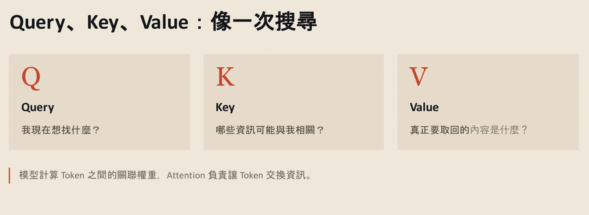
查看完整第 30 頁 ↗
帶著這個比喻看 Transformer Explainer 示範，就不必只盯著一串看不懂的數字。你可以沿著文字輸入，找到 Token ID 與位置，再看每個位置如何進入 Q、K、V 的計算。先不用急著弄懂中間的矩陣細節，試著把輸入與輸出接起來。
模型已經把文字、順序和相關前文帶入運算。那這一輪運算完成時，得到的是一句寫好的答案嗎？
核對這一段的逐字稿 · 50:50–54:19 · 2 個原章節
以下直接取自整理逐字稿，保留原措辭及待核標記；不是人工逐秒校稿。正文的銜接與練習不包含在此。
00:50:50｜Attention 與 Q、K、V
00:50:50 ↗
另外一個就是attention，就是每個token都在看前文。這個也先跳過，原因是因為這個不是那麼好理解。attention主要會有三個參數所產生。我們現在給定一個情境，假設你輸入的文字跟一列隊伍是一樣的，你可能是隊伍裡面的第三個。你們之後可能會分組，所以Q就有點像是說你是第三位，你可能先掃過第一位、掃過第二位、掃過第四位，把它整個隊伍掃完。你可能會想說我現在要找什麼？
00:51:36 ↗
分組你可能想要找一個心善的人，可能看起來舒服的人。所以Q也很像是你想要找一個面向看起來順眼的人，哪些知識可能和我相關？你可能會看的是他的特徵，看著他的頭髮、看著他的眼睛、看著他的體型之類的。你要取回的內容是什麼？就代表說你要取回的是這個人的標籤，這個人在你掃過的過程當中，他是不是一個心善的人。所以每一個文字，都需要進行這三個不同的計算。這三個不同的計算其實對應到的，就是你這個字要找什麼、這個字的哪些資訊和他有關、要取回的內容是什麼。
00:52:29 ↗
所以每一個都要經過這個計算。
00:52:33｜Transformer Explainer 的運算示範
00:52:33 ↗
我們就可以到Transformer Explainer這邊，這個解釋。這個是修正過後的GPT-2，一個比較簡單的基本的結構。現在的結構，理論上都是按照Transformer結構再去做進行。但後面已經有一點魔改了，原本Transformer結構的版本。 所以如果你今天輸入了文字，叫Data visualization empowers users to，這個是它接龍接出來的。所以你等於是只輸入這幾個字。
00:53:18 ↗
所以我們可以來看，這邊把它打開，這個就是它的Token的ID。Data對應到6601的數字，它的位置在有一些Computer的計算裡面，其實位是0，所以它是第一個，所以它是0 1 2 3 4 5。所以所有東西每一個字，都會經過QKV的計算。這個計算中間的過程比較複雜，所以中間的過程我們基本上不會去解釋。但是要記得它其實是這個Token的ID，就是Token的ID跟編碼。
00:54:06 ↗
這個當然先轉成高維度空間，跟編碼一起去進行計算。 所以這個是整個過程的Input，
模型算完一輪，拿到的其實是什麼？
接著從輸入端看向輸出端。模型根據目前已有的內容，替詞彙表中的候選 Token 計算分數。這些原始分數叫 Logits。此時還沒有一篇完整文章，甚至還沒選定接下來要放哪一個 Token。
投影片用取樣流程來解釋接下來的選擇。Temperature（溫度）影響候選機率有多集中；Top-k限制保留多少個高分候選。Softmax把分數轉成機率分布，取樣則依這個分布選出下一步。看圖時，請把「分數」「候選範圍」「機率」和「最後選到的結果」分開。
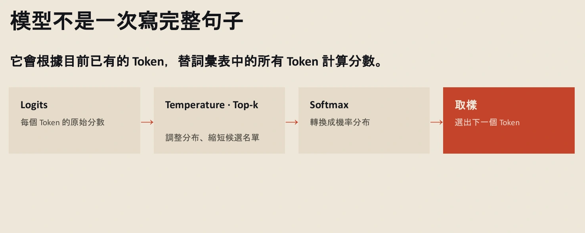
查看完整第 32 頁 ↗
為什麼選完之後還要再算？看下一張投影片：原先的輸入是 Data visualization empowers users to，接上 visualize 之後，這個新詞也成了前文的一部分。下一輪要回答的，已經是「這段更長的內容後面接什麼」。
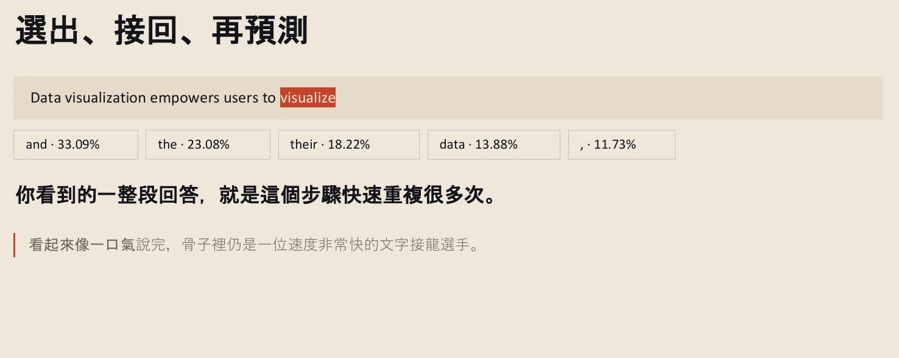
查看完整第 34 頁 ↗
影片中的現場操作則走出了另一條路：在包含 find 的前文後，接出 Interesting，再接出 Result。這和投影片的 visualize 不是同一筆結果，不能拼成一次實測。兩個例子共同展示的，是選出一個、接回前文、繼續下一輪。
如果前面選出的內容把話題帶向另一個方向，後面也可能沿著新的前文繼續走，形成「愈接愈歪」的情境。但不能把所有錯誤都歸因於抽到了低機率選項：一句事實錯誤的話，也可能在模型裡拿到很高的接續機率。
停一下 · 整理者練習Top-k 設成 2，代表模型只認識兩個 Token 嗎？
不是。這是縮小本次取樣保留的候選名單，不是把模型的詞彙表刪到只剩兩個。也不能把它理解成「一次直接輸出兩個 Token」。
現在，「文字接龍」不再只是一句口號。但這條流程裡，有哪一步保證了回答的事實正確？
核對這一段的逐字稿 · 54:19–01:01:22 · 7 個原章節
以下直接取自整理逐字稿，保留原措辭及待核標記；不是人工逐秒校稿。正文的銜接與練習不包含在此。
00:54:19｜為下一個 Token 計算分數
00:54:19 ↗
Output就會決定說，下一個字是怎麼被選出來的。就是模型不是一次〔疑似「寫完」；原辨識「喜歡」〕完整的句子，它會去計算所有儲存格裡面每一個格子，他們的分數是多少。這個分數就決定說，我下一個字，我可能要去接哪一個字。
00:54:46｜Temperature 與 Top-k
00:54:46 ↗
這邊有兩個可以去控制，就是溫度跟我要取得候選名單，把它轉成機率。這個不好理解，所以回到這張圖來看。最後2後面它要接哪一個？如果我今天K選5的時候，它其實每一個字都會做計算。如果你把這邊打開，它其實每一個字都會去計算，成一組數字。這組數字它會再除以一個溫度。所以如果你把溫度調低的時候，你就會發現說，它的答案有97.66%只會產生這個字。但如果你把溫度調高一點的時候，你就會發現說，它好像每一個的機率，都會變得比較平均。
00:55:42 ↗
K就代表說你一次，你要取回幾個Token，當作你的候選人。所以如果你取了14個的話，你就有可能這14個字，都是你的候選人。所以如果你的溫度很高的時候，就代表說你可能會去接到一些比較奇怪的單字。這個就會是幻覺的來源之一，就有可能它去接到一個機率比較低的數字所對應的文字。
00:56:15｜模型設定與逐步生成例子
00:56:15 ↗
現在的模型基本上不太會讓你去調 Temperature，因為它們的Temperature基本上都是固定1，然後它們的TopK原則上大致上都是30或40。 對，所以看就是，原本的文字長這樣：〔畫面輸入：Data visualization empowers users to find；原辨識：DataVariation used to find〕。你把它Generate之後，它就會產生下一個字。下一個字它接到的是Interesting。那你再產生下一個字，所以Interesting完之後是接Result。所以如果你原本一開始，你只有給它這幾個字的話，那它其實就是一個字、一個字、一個字，不斷的去接出來。
00:57:06 ↗
而且這個Result它接出來的機率只有3.7%，就不是太高，但是還是有一定的機率會去接到這幾個機率比較低的數字。 對，所以你看它就是一路這樣，不斷的被接出來。所以每接一次，它其實都是經過中間的運算。
00:57:31｜生成如何逐漸偏離原意
00:57:31 ↗
所以你想一個情境是，如果你今天在很前面的狀態之下，你就接到一個非常低機率的字，而且這個字的意思有點奇怪，那後面的接龍就會開始逐漸的亂掉，就它的意思可能就是逐漸的歪樓。對，所以這個就是網頁，大家可以去玩看看，你就可以這樣一路不斷的的字去接下去。
00:57:59｜地端模型的慢速生成
00:57:59 ↗
所以可以給大家看，就是如果我用地端模型去跑的話，我故意選千問的3.8 原因是因為它接龍的速度很慢，對，你看這個是它思考的過程，所以你可以看它其實是一個字一個字的，不斷的被吐出來，對，所以這個就是文字接龍的概念。
00:58:45｜接回上下文，繼續下一輪
00:58:45 ↗
所以模型不是每一次就直接選出一個完整的句子，它每一次都會先計算每一個的分數，然後會經過溫度來去調整不同字的機率的曲線，最後TopK會決定你要收回多少個名單，然後轉成句率再做取樣，然後輪迴又到下一輪，就一直不斷的這樣輪迴，最後把該回答的文字給回答完。 所以這個剛已經看過了，所以TopK就是縮短候選的名單。如果我們用圓端模型的話，原則上不太會碰到TopK，除非你用API-T把這個模型調到你的程式裡面來做使用。
00:59:36 ↗
現在也不會有temperature這個機率的分佈，因為現在的模型的temperature都固定乘1。
00:59:43｜AI Studio 介面與參數差異
00:59:43 ↗
對，所以可以很快的到AI Studio去看到這個現象。Google有一個AI Studio的platform，它這邊你可以去選，基本上你有Google帳號，你就可以要記得登錄，然後你就可以去使用。所以如果看Gemini的時候，你可以看到它現在可以讓你選的東西，就是這個模型的思考程度，這個思考程度後面的幾周就會跟各位說明，然後你可以去調整不同的細節，你需不需要調用工具，那或你需要這個模型執行後嗎？
01:00:30 ↗
所以如果把這個拿到比較以前的模型來看的話，拿到2.5來看的時候，你就可以看到2.5的時候你還可以去調溫度，對，然後這邊也有TopP，其實跟TopK是類似的，就是P是機率，你要取回機率大於多少的候選名單。所以在以前的模型，就是這些東西都可以去做調整，但是在最新的模型裡面，像temperature，然後以及TopP這些TopK，那這些都已經基本上都已經消失了。但是這個就還是因不同的模型會有不同的決定。
接得很順，為什麼還需要查證？
走到這裡，我們可以把整條路說出來：文字被切成 Token，轉成編號與向量，帶入位置和前文的資訊，算出候選分數，再依解碼規則選出下一步。現在可以回到使用者的問題：一段話讀起來非常流暢，內容就一定正確嗎？
前面的流程說明了文字怎麼生成，卻沒有替每個句子附上可靠證據。接續得自然、聽起來合理、能被資料支持，是三種不同的判斷。這也是為什麼理解機制之後，仍要回到各領域的知識與查證方法。
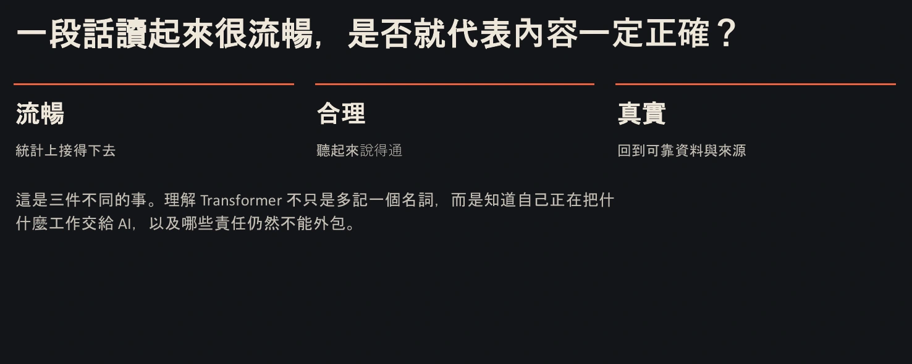
查看完整第 38 頁 ↗
所以這一段不只是認識七八個新名詞。看到回答時，我們可以追問：這是怎麼產生的？我的前文會不會限制了它的方向？它給的理由有沒有可靠來源？回到一開始「為什麼要學會判斷」的問題，現在就有了更具體的理由。
讀完試著說說看 · 整理者練習不用只列名詞，你能解釋「切分之後，為什麼還要編號、位置與前文」嗎？
可以這樣串起來：先把句子切成處理單位，再用編號找到對應向量；但相同的字換順序會改變意思，所以需要位置；只有順序仍可能有歧義，所以還要參照前文。經過運算後，得到候選分數並選下一步。這是生成流程，仍需另行核對事實。
若只記得 Token、Embedding、Attention 的名字，回去讀它們之間的轉折，會比再背一次定義更有幫助。
核對這一段的逐字稿 · 01:01:22–01:03:20 · 2 個原章節
以下直接取自整理逐字稿，保留原措辭及待核標記；不是人工逐秒校稿。正文的銜接與練習不包含在此。
01:01:22｜從文字到數字，再回到文字
01:01:22 ↗
所以我們以為我們看到的是文字，但其實模型它一直不斷的在處理非常多的數字，就是我們看到文字都會被一個編碼員解密成編碼，那以及他們的位置。那這個位置在經過Transformer的計算，那裡面可能幫Tension矩陣的乘法配線性的運算，那最後產生每個候選都有一個分數，那選出的結果再進行重複。所以它不是突出文字，它是先計算下一個Token的分數，然後再依解碼的規則去選出一個文字。那這個文字是機率化的，
01:02:16｜流暢的回答不一定正確
01:02:16 ↗
所以這邊就會有幾點需要大家去思考。 因為AI很擅長一段話讀起來非常的流暢，但這個流暢是不是就代表內容一定是正確的？這個完全是不一定的。原因是AI很容易去處理統計接得上的問題，就是因為它本來就是一個統計的概念，所以你就是一個Token把一個Token下去接。所以有時候你會看起來文字非常的順，那聽起來也蠻合理的，但是它不見得是正確的。那這個就要回到不同的Domain，有不同Domain的人的檢查方式。所以這也是利用AI來學習一個很大一個問題，就是很多人其實不是那麼容易用正確的方式，藉由AI來學習新的知識。
01:03:15 ↗
那這個後面才會跟各位進行說明，
來源與閱讀說明
本筆記合併教育篇與模型原理篇，依 11:10–30:07、40:38–01:03:20 的逐字稿順序整理。開場自介、兩篇之間的社群安排與模型開場，以及 01:03:20 之後的比喻與操作段落未納入；完整內容請回到影片或原逐字稿。
正文依來源重寫，銜接句及追問由整理者新增，並非影片中的示範或研究。課中的職場觀察、人物引述、教育建議與未來情境，保留當時的語境；本試作未逐項查核其外部來源，不當成已驗證的現況。外部技術補充另附來源。
逐字稿為語音辨識整理，未經人工逐秒校稿。時間對照以逐字稿章節為準。14 張 PDF 裁圖保留原內容，依邊界裁去留白與部分頁首頁尾；第 14 頁底部補充、第 16 頁內容區 QR code 仍保留。原圖內的重字或排版問題可能存在，各圖均可放大或開啟完整原頁。
可選取文字留下評論，再預覽與複製回饋。評論只保存在目前瀏覽器，不會自動傳送。本頁為教學型筆記的試作，尚未經學習者成效測試。樣式沿用既有 Week1 筆記；html-visualizer 第三方聲明。